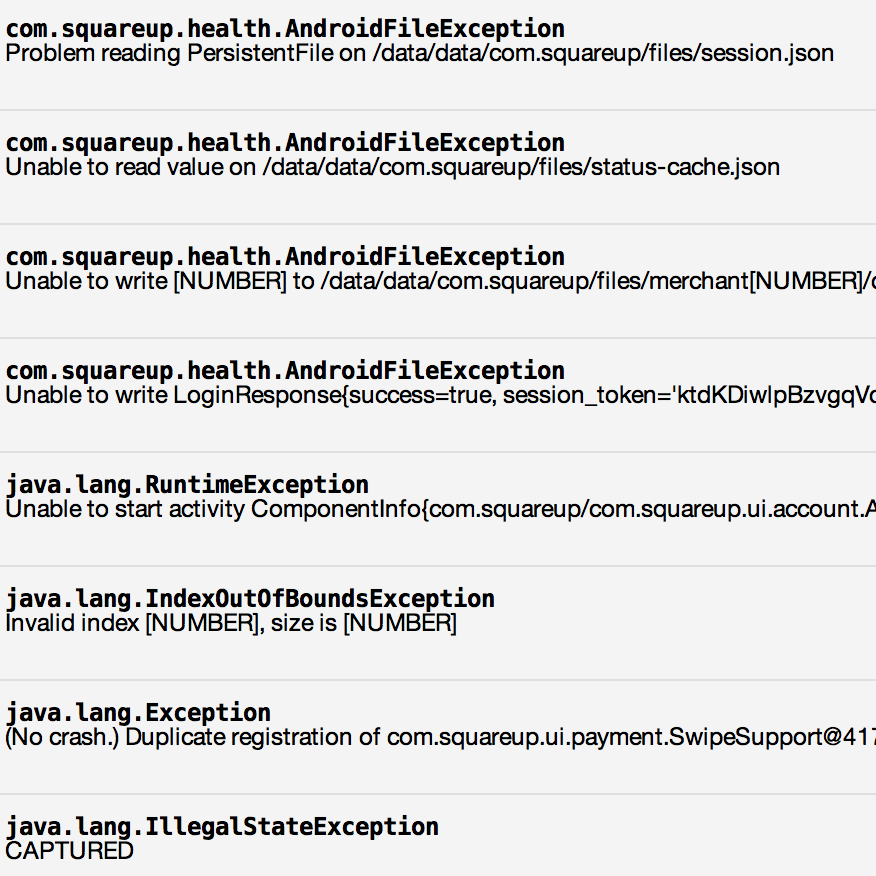

Fewer Emails

Rather than emailing the entire company when there’s a bug, Squash only sends an email to the engineer at fault. When people receive an email from Squash, they pay attention to it, because it’s usually something they’re prepared to address. If the engineer sits on the email, eventually it escalates. You can configure how you’d like unaddressed bugs to escalate.
Smart Code Analysis

Squash uses git blame to figure out who can fix the bug. Squash analyzes the stack trace of every exception, and determines which line in the backtrace is the source of the bug. It then uses git to figure out who might have caused the bug, or at least someone who’s familiar with the code. Squash shows you where in the code the problem was, so you can quickly get to fixing it.
Better Data

View more information about bugs when they occur. Dig inside the values of environment variables, instance variables, request parameters, and more using the Value Inspector. Did this bug happen when the user was on 3G? Were they low on memory?
Data Visualization

Squash lets you analyze information about a bug to determine its root cause. You can view occurrence histograms displayed against deploy times to determine if a deploy changed the frequency of occurrence, or analyze occurrences dimensionally to determine if, for example, a combination of operating system or web browser is the source of most of the occurrences.
Symbolication
Squash symbolicates iOS crashes, un-minifies JavaScript code, and de-obfuscates Java code, allowing it to use its first-class static analysis capabilities on any project.
Collaboration

Squash includes a full-featured commenting system, ticket-management system similar to JIRA, and a news feed letting you collaborate on, and track the progress of, fixing a bug. Squash also has PagerDuty and JIRA integration allowing you to triage in emergencies and track longer term problems.